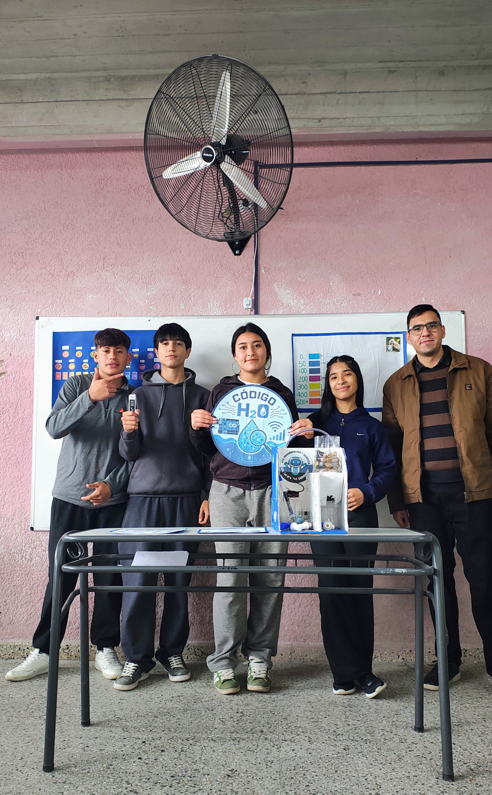
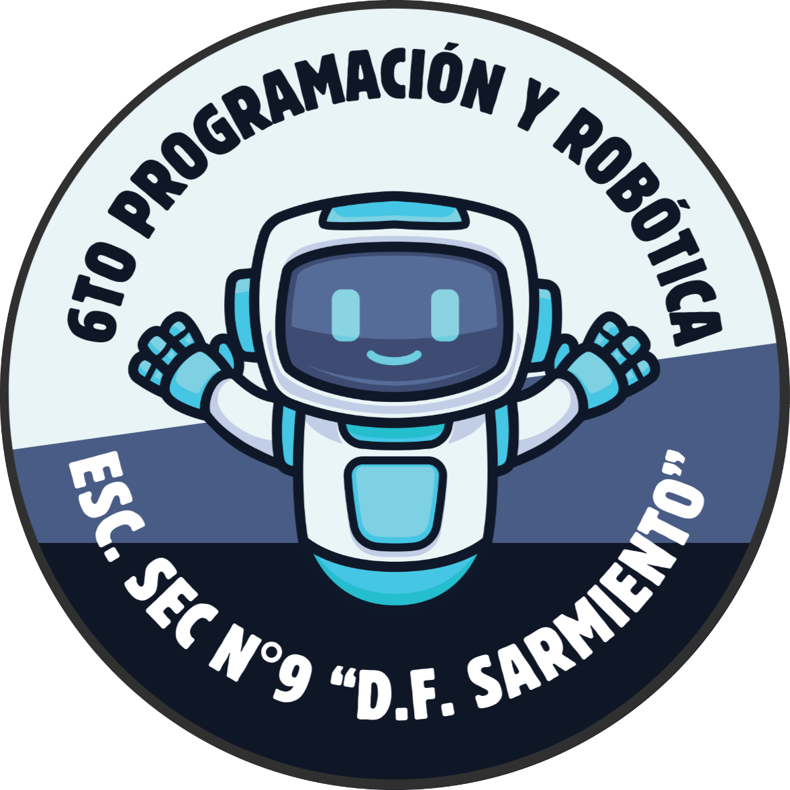
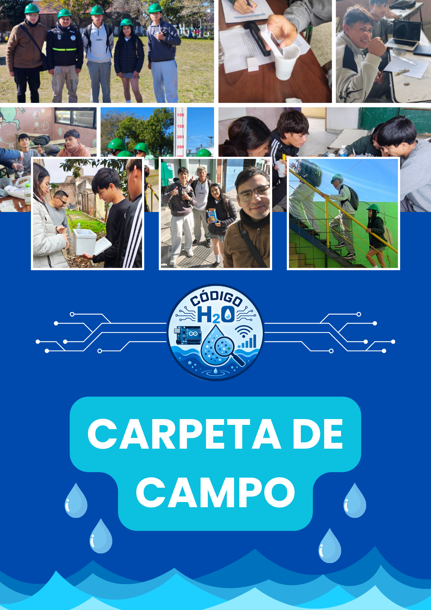
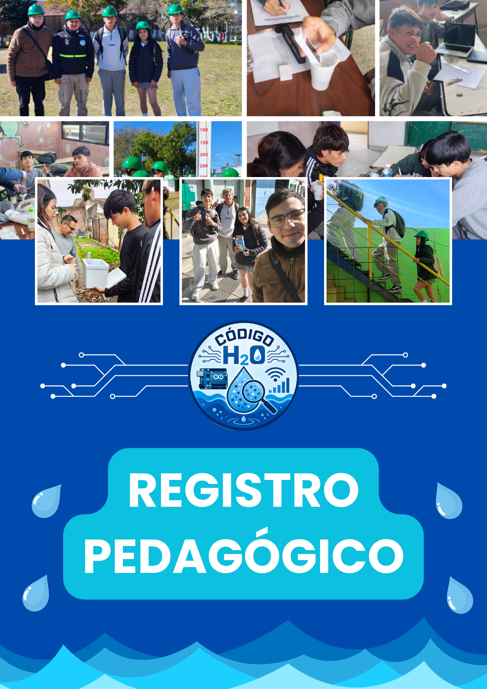
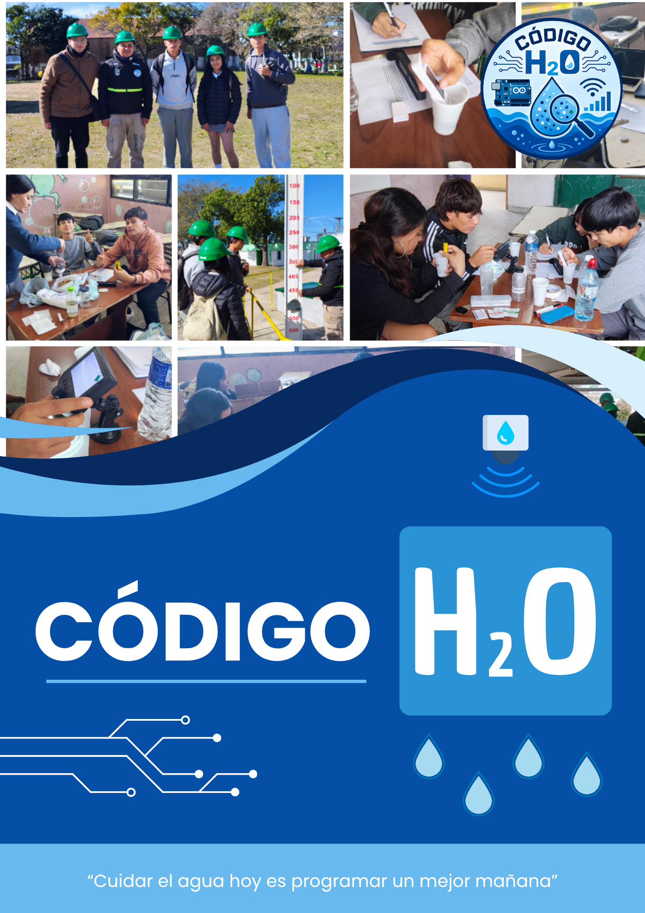

Una pregunta, una comunidad y un proyecto que nos llevó a investigar, construir y aprender.
Código H₂O es un proyecto educativo interdisciplinario desarrollado por estudiantes de 6.º año del Bachiller en Programación y Robótica de la Escuela Secundaria N.º 9 “Domingo Faustino Sarmiento”, de la ciudad de La Paz, Entre Ríos.
El proyecto surgió a partir de nuestras inquietudes sobre la calidad del agua que consumimos en nuestra comunidad. A partir de esa pregunta comenzamos un recorrido de investigación, experimentación y construcción tecnológica.
Investigamos, encuestamos a la comunidad, analizamos muestras de agua, conocimos cómo funciona una planta potabilizadora, recibimos información del Área de Bromatología y desarrollamos un prototipo basado en Arduino para monitorear parámetros relacionados con la calidad del agua.
Código H₂O no fue solamente construir un prototipo: fue aprender, investigar y buscar respuestas a una problemática de nuestro entorno.

Estudiantes de 6.º año impulsando la investigación y tecnología en nuestra ciudad.
Somos estudiantes del Bachiller en Programación y Robótica de la Escuela Secundaria N.º 9 “Domingo Faustino Sarmiento”. Durante el proyecto trabajamos de manera colaborativa, combinando conocimientos de programación, electrónica, ciencias naturales, matemática, comunicación y otras áreas para investigar una problemática de nuestra comunidad.

Programación y Robótica
El proyecto fue desarrollado en nuestra ciudad, abordando una problemática vinculada directamente con nuestro entorno hídrico.
De una pregunta nació una investigación en etapas consecutivas.
Investigamos la problemática del agua y buscamos información de contexto.
Realizamos encuestas y conocimos las inquietudes reales de la población.
Analizamos diferentes muestras de agua y estudiamos distintos parámetros.
Conocimos la Planta Potabilizadora de Santa Elena y aprendimos sobre el proceso de tratamiento.
Charla con el Área de Bromatología de La Paz sobre controles de calidad.
Diseñamos y construimos nuestro prototipo basado en la plataforma Arduino.
Elaboramos folletos y afiches para compartir lo aprendido con los vecinos.
Accedé a los documentos de investigación oficiales elaborados por los estudiantes.

Registro detallado del proceso, observaciones y notas tomadas día a día.

Acompañamiento docente y sistematización de aprendizajes interdisciplinarios.

Documento formal que resume las conclusiones, fundamentos y funcionamiento.
Conocé parte del trabajo que realizamos durante el proyecto.
Código H₂O comenzó con una pregunta sobre el agua y terminó convirtiéndose en una experiencia de investigación, tecnología y aprendizaje compartido.
Porque cuando investigamos nuestra realidad, también descubrimos todo lo que somos capaces de construir.
“Cuidar el agua hoy es programar un mejor mañana.”